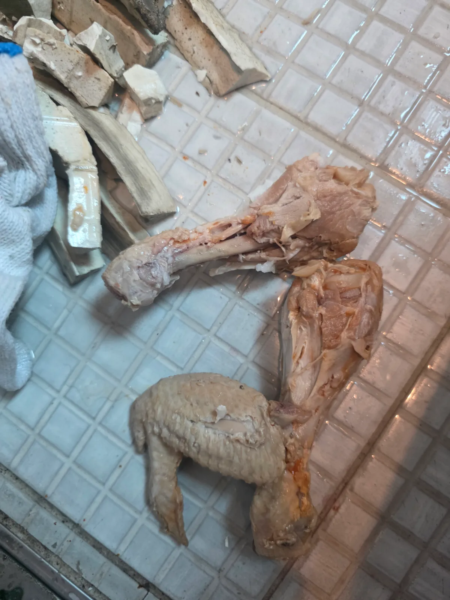

강남구 역삼동 변기막힘, 현장 도착 후 진단
서울 강남구 역삼동 오피스텔에서 발생한 변기막힘으로 신라건축설비가 방문했습니다. 여러 음식물이 들어간 상태라 처음부터 원인을 특정하기는 어려웠습니다.
음식물로 인한 변기막힘은 내용물의 크기와 형태, 걸린 위치에 따라 작업 방법이 달라집니다. 특히 뼈가 붙은 큰 음식물은 물에 쉽게 풀어지지 않고, 굴곡진 변기 내부 트랩이나 하부 연결부에 걸릴 수 있습니다. 현장에서는 이물질을 회수할 수 있는지 작업 반응을 살피며 접근했습니다.
1단계: 증상 확인과 필요한 장비 작업
먼저 석션으로 이물질 회수를 시도했지만 해결되지 않았습니다. 이어서 변기 관통기를 사용했으나 막힘이 해소되지 않아, 같은 작업을 반복하기보다 변기를 탈거하기로 판단했습니다.
이물질을 밀어내 변기에서 물이 내려가더라도, 막힘 원인이 제거된 것은 아닐 수 있습니다. 크고 단단한 음식물이 오수관으로 넘어가면 방향이 바뀌는 엘보나 통로가 좁아진 지점에 걸려 다시 막힘을 일으킬 가능성이 있습니다.
무리한 작업으로 변기가 흔들리거나 하부 연결부에 힘이 전달되면 정심 등 연결 부속의 위치나 가스켓의 밀봉 상태에 문제가 생길 수 있습니다. 도기로 된 변기도 강한 충격을 받으면 균열이나 파손 위험이 있습니다. 이번에는 이러한 부담을 줄이고 원인을 직접 확인하기 위해 탈거로 전환했습니다.

2단계: 원인 구간 처리와 정상 작동 확인
변기를 분리해 뒤집어보니 하부 배출구의 오수관 연결부에 닭다리와 닭날개가 걸려 있었습니다. 뼈와 살이 붙어 형태와 부피가 그대로 남아 있어 통로를 통과하지 못한 상태였습니다.
하부에서 걸린 모습을 확인한 뒤 닭다리와 닭날개를 직접 꺼냈습니다. 큰 이물질을 제거한 다음에는 탈거한 변기 하부 쪽에서 에어건을 사용해 내부에 남은 음식물을 정리했습니다. 이 과정에서 치킨무도 다량 나왔습니다.
처음 발견한 닭뼈만 꺼내고 끝내지 않고, 함께 들어간 음식물까지 제거했습니다. 이후 변기를 원위치에 재설치하고 하부 마감을 진행했습니다.

작업 결과와 재발 방지 안내
이번 역삼동 오피스텔 변기막힘은 닭다리·닭날개와 잔여 치킨무를 외부로 회수해 처리한 사례입니다. 석션과 관통 작업으로 해결되지 않는 상황에서 탈거로 전환한 덕분에, 하부에 걸린 원인을 직접 확인하고 제거할 수 있었습니다.
변기에서 음식물이 보이지 않게 내려갔다고 해서 배관을 끝까지 통과한 것은 아닙니다. 이번처럼 하부 연결부에 남아 있을 수 있으므로, 음식물을 넣은 뒤 막혔다면 반복해서 물을 내리거나 도구로 강하게 밀어 넣지 않는 것이 좋습니다.
상담할 때 넣은 음식물의 종류와 양, 이미 시도한 작업을 알려주시면 작업 방법을 판단하는 데 도움이 됩니다. 작은 음식물도 한꺼번에 쌓이면 막힘을 일으킬 수 있으므로, 남은 음식과 뼈는 크기에 관계없이 변기에 버리지 않아야 합니다.
신라건축설비는 서울·경기권 변기막힘 현장에서 이물질의 종류와 작업 반응을 확인하고, 석션·관통·탈거 중 현장에 맞는 방법을 선택합니다. 빠른 처리와 함께 변기 및 연결부에 무리가 가지 않는 작업을 중요하게 생각합니다.
최종 조치: 변기를 탈거해 하부에 걸린 닭다리와 닭날개를 직접 회수했습니다. 잔여 음식물까지 제거한 뒤 변기를 재설치하고 하부를 마감했습니다.
현장 방문 전 확인하는 비용과 작업 범위
신라건축설비는 현장 증상과 배관 구조를 확인한 뒤 필요한 작업과 예상 비용을 안내합니다. 단순 관통으로 해결되는지, 배관내시경·석션·고압세척 또는 변기 탈거가 필요한지는 현장 상태에 따라 달라집니다. 출장비와 야간 작업비, 추가 장비 비용이 발생할 수 있는 경우 작업 전에 먼저 설명하고 동의를 받은 범위에서 진행합니다.
업체를 선택할 때 확인할 사항
무조건적인 ‘0원’ 표현보다 실제 작업 범위, 추가 비용 조건, 사용 장비와 사후 대응 기준을 확인하는 것이 중요합니다. 해결되지 않았을 때의 비용 기준과 작업 후 동일 증상 발생 시 점검 범위를 사전에 문의해두면 불필요한 분쟁을 줄일 수 있습니다.
강남구 변기막힘 자주 묻는 질문
변기막힘은 왜 반복되나요?
강남구 역삼동 현장처럼 오피스텔 변기가 막혀 정상적인 사용이 어려웠습니다. 음식물을 넣은 이력이 있었지만, 어떤 내용물이 막힘을 일으켰는지는 알 수 없는 상태였습니다. 증상은 원인이 현장마다 다를 수 있습니다. 변기 내부 이물질뿐 아니라 하부 오수관 막힘이나 배관 상태 때문에 반복될 수 있습니다. 같은 변기막힘이 재발하면 막힌 위치와 원인을 다시 확인하는 것이 중요합니다.
변기 물이 안 내려가거나 역류하면 변기뚫는업체를 불러야 하나요?
물이 천천히 내려가거나 수위가 차오르고 변기역류가 반복되면 단순 뚫어뻥보다 전문 장비 점검이 필요한 경우가 있습니다. 현장에서는 증상과 배관 구조를 먼저 확인합니다.
변기 이물질 막힘은 변기를 탈거해야 하나요?
물티슈·청소포·플라스틱·음식물처럼 변기 트랩에 걸린 이물질은 위치에 따라 변기 탈거가 필요할 수 있습니다. 무조건 탈거하지 않고 먼저 막힘 위치를 판단합니다.
변기뚫는업체는 어떤 장비로 작업하나요?
현장 상태에 따라 석션, 에어건, 배관내시경, 변기 탈거 등을 사용합니다. 하부 오수관 문제라면 변기만 뚫는 작업보다 배관 구간 확인이 중요합니다.
변기막힘 비용은 어떻게 정해지나요?
단순 관통인지, 이물질 제거와 변기 탈거가 필요한지, 오수관이나 공용배관 작업이 필요한지에 따라 달라집니다. 추가 장비나 작업이 필요하면 진행 전에 범위와 비용을 안내합니다.
변기에서 냄새가 나거나 물이 자주 차오르는 것도 막힘과 관련 있나요?
악취나 수위 이상이 항상 막힘 때문인 것은 아니지만 배수 불량, 오수관 상태, 연결부 문제와 함께 나타날 수 있습니다. 반복되면 현장 점검으로 원인을 구분해야 합니다.
변기막힘 서울·경기 출동지역
신라건축설비는 강남구 역삼동 현장을 포함해 서울 25개 구와 경기도 31개 시·군의 배관 문제를 상담합니다. 현장 거리와 기사 배정 상황에 따라 출동 가능 여부를 먼저 안내드립니다.
서울 전 지역
강남구 · 강동구 · 강북구 · 강서구 · 관악구 · 광진구 · 구로구 · 금천구 · 노원구 · 도봉구 · 동대문구 · 동작구 · 마포구 · 서대문구 · 서초구 · 성동구 · 성북구 · 송파구 · 양천구 · 영등포구 · 용산구 · 은평구 · 종로구 · 중구 · 중랑구
경기도 주요 출동지역
수원시 · 용인시 · 고양시 · 화성시 · 성남시 · 부천시 · 남양주시 · 안산시 · 평택시 · 안양시 · 시흥시 · 파주시 · 김포시 · 의정부시 · 광주시 · 하남시 · 광명시 · 군포시 · 양주시 · 오산시 · 이천시 · 안성시 · 구리시 · 의왕시 · 포천시 · 양평군 · 여주시 · 동두천시 · 과천시 · 가평군 · 연천군